Géneros conocidos
4 géneros conocidos del rock y el metal
Heavy Metal
Nació a finales de los años 60 a partir del hard rock y el blues rock. Se caracteriza por guitarras eléctricas distorsionadas, solos virtuosos, ritmos contundentes y voces potentes.
Hard Rock
Combina el rock and roll y el blues con un sonido más fuerte: guitarras eléctricas distorsionadas, bajo, batería y, en ocasiones, teclados.
Thrash Metal
Subgénero más rápido y agresivo del heavy metal, surgido a comienzos de los años 80. Mezcla la velocidad del hardcore punk con riffs cortantes, doble bombo y solos rápidos.
Death Metal
Subgénero extremo del metal surgido a mediados de los años 80. Se caracteriza por voces guturales, guitarras graves y muy distorsionadas, blast beats en la batería y letras oscuras.
Bandas
Algunas bandas representativas de cada género
- Todos
- Hard Rock
- Heavy Metal
- Thrash Metal
- Death Metal
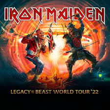
Iron Maiden
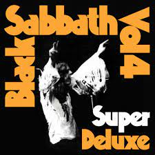
Black Sabbath
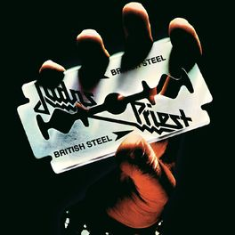
Judas Priest
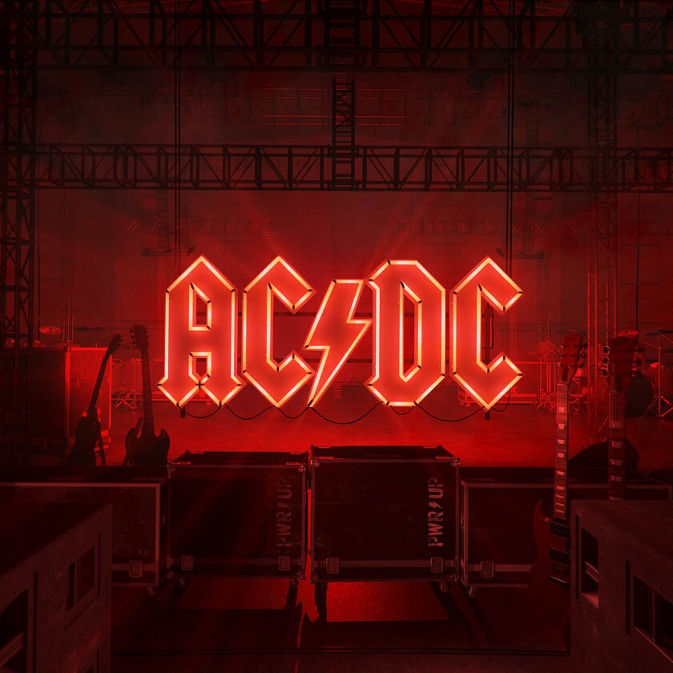
AC/DC
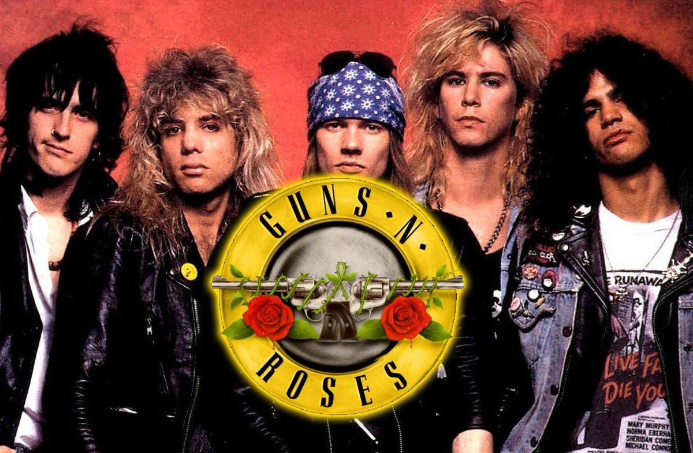
Guns N' Roses
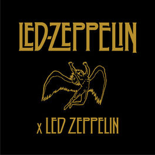
Led Zeppelin
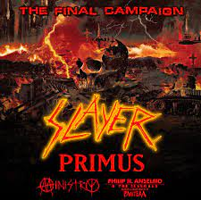
Slayer
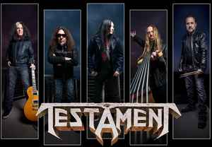
Testament
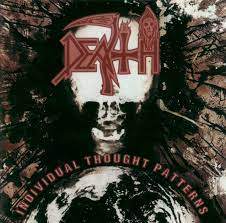
Death
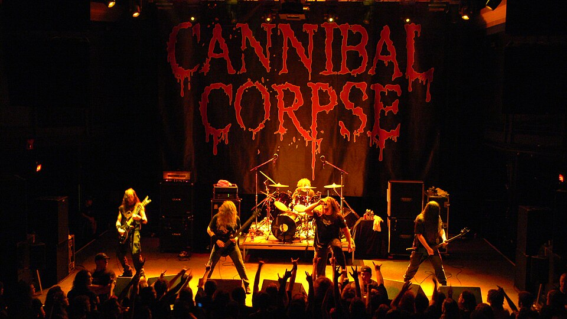
Cannibal Corpse
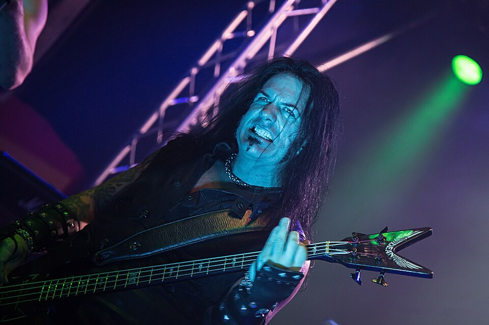